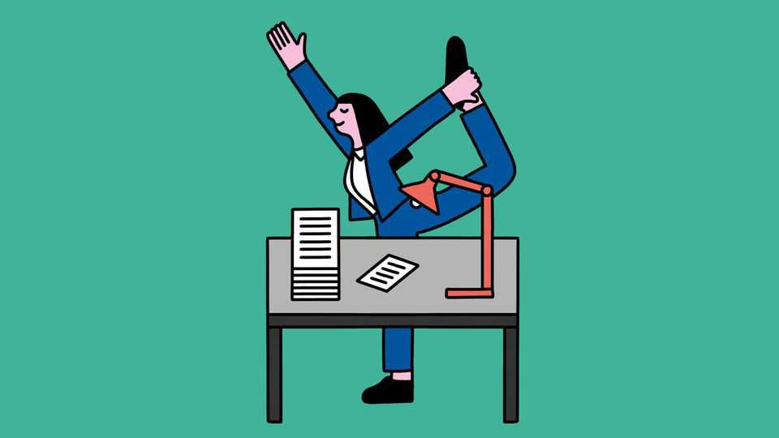

Why standing at your desk may be little better than sitting
Apologies to those who have invested in a modish workstation

Aug 20th 2026
PROLONGED SITTING rightly has a bad rap. A review in 2012 concluded that the most sedentary were more than twice as likely as the least to have or develop diabetes, and also faced a much higher risk of premature death. Another, in 2015, found that sitting for long stretches was associated with “deleterious health outcomes regardless of physical activity”. Three years after that an analysis of news articles in the British Journal of Sports Medicine found hundreds of pieces which referred to claims likening sitting to smoking.
That last claim is overblown. In 2018 the American Journal of Public Health reckoned sitting’s true risk to be a tenth of that of smoking. But this is still bad. Hence the appeal of standing desks and, more recently, “active seats”: chairs and stools that tilt, wobble or rock to force continual postural adjustments. Is either actually healthier?
An analysis in 2018 found standing at a desk burned just nine more calories per hour than sitting. Nor are the cardiovascular gains impressive. A review in 2020 pooled nine trials involving 877 people. Participants stood about 1.3 hours more a day and were followed for roughly four months. Body fat and blood-sugar control improved slightly, but blood pressure, insulin, cholesterol and triglycerides did not. The study did not, however, look at blood flow and the activation of postural muscles, both factors which might contribute to the benefits of standing over sitting.
That said, standing can have downsides. Work published in the International Journal of Epidemiology in 2024 followed 83,013 adults in Britain for an average of nearly seven years. Those who stood for more than two hours a day had a higher risk of varicose veins and venous ulcers, perhaps because of pooling of blood in the legs.
What matters far more is movement. A study of nearly 482,000 Taiwanese adults in 2024 found that just 15–30 minutes of extra daily exercise could erase most of the excess mortality risk associated with sitting at work. Desk-bound workers may therefore wonder if active seating can make a difference. Some findings are encouraging.
Consider a trial at Georgia Southern University. In this 20 adults performed reading and typing tasks on an ordinary chair, an exercise ball and a seat mounted on top of an inflatable bladder. Energy expenditure on the ball was similar to normal sitting. But on the bladder, participants’ heart rates and calorie burn rose by 6-13% and 19-40% respectively. Writing in Ergonomics in 2019, the researchers attributed this to muscle contractions required to maintain balance.
A longer trial found another benefit. For six months 133 office workers in Bangkok sat on either a foam seat pad or a slightly unstable inflatable one designed to encourage frequent postural changes. Those using the latter were 81% and 84% less likely to develop neck and lower-back pain, respectively. Writing in the Scandinavian Journal of Work, Environment & Health in 2024, the researchers described the pad as a “light-exercise device”. They reckoned it reduced fatiguing muscle contractions and improved blood flow to compressed tissues.
There are caveats. Many studies of dynamic sitting have been small or brief. Results have varied with seat design, and some participants have reported discomfort in the derrière. That said, there does seem to be a lesson here: the real distinction is not between sitting and standing, but between remaining still and moving.■
After a free, evidence-based guide to health and wellness? Sign up to our weekly Well Informed newsletter.